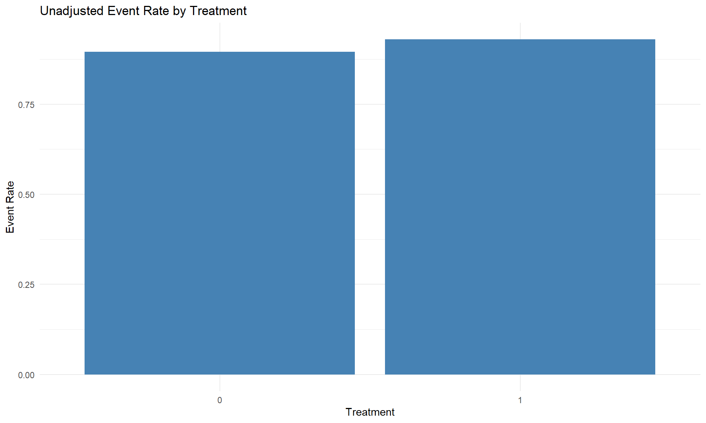

HCV Treatment and Kidney Injury: A Simulation-Based Case Study
Andrew Mertens
2025-03-03
Overview
This document simulates and analyzes data for a case study on HCV treatment and kidney injury. The steps include:
- Data simulation with realistic confounding relationships
- Introduction of missing data following realistic patterns
- Exploratory data analysis and visualization
- Missing data handling through random forest imputation
- Calculation of true causal effects (for simulation reference)
Setting up the environment
# Load necessary libraries
library(MASS)
library(tidyverse)
library(dplyr)
library(ggplot2)
library(naniar) # For missing data visualization
library(tableone) # For summary tables
library(missForest) # For random-forest based imputation
# Set seed for reproducibility
set.seed(42)Part 1: Data Simulation
We’ll simulate data for a study examining whether HCV treatment reduces the risk of kidney injury. The simulation will include:
- Baseline covariates (age, sex, diabetes, hypertension, GFR, BMI)
- Treatment assignment with realistic confounding
- Time-to-event outcome (kidney injury) with censoring
- Introduction of realistic missing data patterns
Simulate baseline covariates and treatment
# Define sample size
n <- 5000
# Simulate baseline covariates
age <- rnorm(n, mean = 60, sd = 10) # Age centered at 60
sex <- rbinom(n, 1, 0.5) # Binary sex variable (0 or 1)
diabetes <- rbinom(n, 1, 0.3) # 30% prevalence of diabetes
hypertension <- rbinom(n, 1, 0.4) # 40% prevalence of hypertension
baseline_gfr <- rnorm(n, mean = 90, sd = 15) # Baseline kidney function (eGFR)
bmi <- rnorm(n, mean = 28, sd = 5) # BMI distribution
# Introduce non-linearity in the relationship between age and treatment
age_effect <- exp(-0.05 * (age - 60)^2) # Exponential effect centered at 60
# Interaction terms affecting treatment assignment
interaction_term <- (diabetes * hypertension) + 0.5 * (sex * bmi)
# Simulate treatment assignment (propensity depends on confounders non-linearly)
treatment_prob <- plogis(-1 + 0.02 * age + 0.4 * diabetes + 0.3 * hypertension +
0.2 * sex + 0.01 * baseline_gfr + 0.02 * bmi +
interaction_term - age_effect)
treatment <- rbinom(n, 1, treatment_prob)Simulate outcome (kidney injury) and censoring
# Introduce non-linearity in the relationship between age and outcome
age_outcome_effect <- sin(age / 10)
# Simulate time to kidney injury outcome (survival outcome)
baseline_hazard <- 0.02 # Baseline hazard rate
outcome_prob <- plogis(-2 + 0.03 * age + 0.5 * diabetes + 0.4 * hypertension +
0.3 * sex + 0.015 * baseline_gfr + 0.025 * bmi +
interaction_term - 0.5 * treatment - age_outcome_effect)
event <- rbinom(n, 1, outcome_prob) # Binary outcome for kidney injury
# Simulate time-to-event (higher probabilities lead to shorter time-to-event)
time_to_event <- rexp(n, rate = baseline_hazard * (1 + outcome_prob))
# Censor some observations randomly
censoring_time <- rexp(n, rate = 1/10) # Administrative censoring at random times
observed_time <- pmin(time_to_event, censoring_time)
censored <- as.integer(time_to_event > censoring_time)
# Create a data frame
df <- data.frame(
age, sex, diabetes, hypertension, baseline_gfr, bmi,
treatment, event, time_to_event, observed_time, censored
)Introduce realistic missing data patterns
In real-world studies, missing data follows patterns related to observable characteristics. We’ll introduce missingness that depends on observed variables to create a more realistic dataset.
# Set seed for reproducibility of missingness
set.seed(123)
# 1. Age: Missingness probability depends on diabetes status and deviation from age 60.
df <- df %>%
mutate(
p_age_missing = plogis(-2 + 0.05 * diabetes + 0.01 * (age - 60)),
age = ifelse(runif(n()) < p_age_missing, NA, age)
)
# 2. Baseline kidney function (baseline_gfr): Missingness depends on hypertension and the current gfr value.
df <- df %>%
mutate(
p_gfr_missing = plogis(-1 + 0.03 * hypertension - 0.01 * baseline_gfr),
baseline_gfr = ifelse(runif(n()) < p_gfr_missing, NA, baseline_gfr)
)
# 3. BMI: Missingness influenced by sex and age.
df <- df %>%
mutate(
p_bmi_missing = plogis(-1.5 + 0.02 * sex + 0.01 * (age - 60)),
bmi = ifelse(runif(n()) < p_bmi_missing, NA, bmi)
)
# 4. Outcome (event): Missingness probability depends on age, diabetes, and treatment status.
# Here, we assume that being treated (treatment == 1) reduces the probability of missing outcome data.
df <- df %>%
mutate(
p_event_missing = plogis(-1 + 0.03 * age - 0.5 * diabetes - 0.5 * treatment),
event = ifelse(runif(n()) < p_event_missing, NA, event)
)
# Remove the temporary probability columns
df <- df %>% subset(., select=-c(p_age_missing, p_gfr_missing, p_bmi_missing, p_event_missing))Calculate true causal effects (for simulation reference)
One advantage of simulation is that we know the true causal effect, which allows us to validate our methods.
# Define the function for probability of kidney injury
calc_risk <- function(age, diabetes, hypertension, sex, baseline_gfr, bmi, interaction_term, treatment) {
lin_pred <- -2 + 0.03 * age + 0.5 * diabetes + 0.4 * hypertension +
0.3 * sex + 0.015 * baseline_gfr + 0.025 * bmi + interaction_term - 0.5 * treatment
return(1 / (1 + exp(-lin_pred)))
}
# Compute expected risks under treatment and no treatment
df <- df %>%
mutate(
risk_treated = calc_risk(age, diabetes, hypertension, sex, baseline_gfr, bmi,
(diabetes * hypertension + 0.5 * sex * bmi), 1),
risk_untreated = calc_risk(age, diabetes, hypertension, sex, baseline_gfr, bmi,
(diabetes * hypertension + 0.5 * sex * bmi), 0)
)
# Compute true causal estimand
true_risk_treated <- mean(df$risk_treated, na.rm = TRUE)
true_risk_untreated <- mean(df$risk_untreated, na.rm = TRUE)
true_risk_difference <- true_risk_treated - true_risk_untreated
true_risk_ratio <- true_risk_treated / true_risk_untreated
# Print results
cat("True Risk (Treated):", round(true_risk_treated, 4), "\n")## True Risk (Treated): 0.9204cat("True Risk (Untreated):", round(true_risk_untreated, 4), "\n")## True Risk (Untreated): 0.9476cat("True Risk Difference (RD):", round(true_risk_difference, 4), "\n")## True Risk Difference (RD): -0.0272cat("True Risk Ratio (RR):", round(true_risk_ratio, 4), "\n")## True Risk Ratio (RR): 0.9713Save simulated data
# Save to CSV
write.csv(df, "data/simulated_case_study_data.csv", row.names = FALSE)Part 2: Exploratory Data Analysis and Missing Data Handling
Now that we have simulated the data, we’ll explore it and handle missing values.
Initial data exploration
# Check summary statistics
summary(df[, c("age", "sex", "diabetes", "hypertension", "baseline_gfr", "bmi", "treatment", "event")])## age sex diabetes hypertension
## Min. :26.28 Min. :0.0000 Min. :0.0000 Min. :0.0000
## 1st Qu.:53.13 1st Qu.:0.0000 1st Qu.:0.0000 1st Qu.:0.0000
## Median :59.88 Median :1.0000 Median :0.0000 Median :0.0000
## Mean :59.82 Mean :0.5068 Mean :0.2938 Mean :0.3962
## 3rd Qu.:66.59 3rd Qu.:1.0000 3rd Qu.:1.0000 3rd Qu.:1.0000
## Max. :95.85 Max. :1.0000 Max. :1.0000 Max. :1.0000
## NA's :606
## baseline_gfr bmi treatment event
## Min. : 38.41 Min. :10.47 Min. :0.0000 Min. :0.0000
## 1st Qu.: 80.55 1st Qu.:24.56 1st Qu.:1.0000 1st Qu.:1.0000
## Median : 90.72 Median :28.02 Median :1.0000 Median :1.0000
## Mean : 90.44 Mean :28.03 Mean :0.9088 Mean :0.9274
## 3rd Qu.:100.35 3rd Qu.:31.50 3rd Qu.:1.0000 3rd Qu.:1.0000
## Max. :144.94 Max. :44.13 Max. :1.0000 Max. :1.0000
## NA's :629 NA's :1431 NA's :3045# Visualize missingness patterns across variables
vis_miss(df)
# Create a summary table of key covariates (including missingness information)
covariate_vars <- c("age", "baseline_gfr", "bmi", "sex", "diabetes", "hypertension")
table1 <- CreateTableOne(vars = covariate_vars, data = df, test = FALSE)
print(table1, missing = TRUE)##
## Overall Missing
## n 5000
## age (mean (SD)) 59.82 (10.07) 12.1
## baseline_gfr (mean (SD)) 90.44 (15.05) 12.6
## bmi (mean (SD)) 28.03 (5.00) 28.6
## sex (mean (SD)) 0.51 (0.50) 0.0
## diabetes (mean (SD)) 0.29 (0.46) 0.0
## hypertension (mean (SD)) 0.40 (0.49) 0.0Visualize distributions of key variables
# Histogram for Age
ggplot(df, aes(x = age)) +
geom_histogram(binwidth = 2, fill = "skyblue", color = "black", na.rm = TRUE) +
labs(title = "Histogram of Age (non-missing)", x = "Age", y = "Frequency") +
theme_minimal()
# Histogram for Baseline GFR
ggplot(df, aes(x = baseline_gfr)) +
geom_histogram(binwidth = 2, fill = "lightgreen", color = "black", na.rm = TRUE) +
labs(title = "Histogram of Baseline GFR (non-missing)", x = "Baseline GFR", y = "Frequency") +
theme_minimal()
# Histogram for BMI
ggplot(df, aes(x = bmi)) +
geom_histogram(binwidth = 1, fill = "lightcoral", color = "black", na.rm = TRUE) +
labs(title = "Histogram of BMI (non-missing)", x = "BMI", y = "Frequency") +
theme_minimal()
Examine relationships between variables
# Scatter plot: Age vs. Baseline GFR, colored by diabetes status
ggplot(df, aes(x = age, y = baseline_gfr, color = factor(diabetes))) +
geom_point(alpha = 0.6, na.rm = TRUE) +
labs(title = "Age vs. Baseline GFR", x = "Age", y = "Baseline GFR", color = "Diabetes") +
theme_minimal()
# Treatment by covariates
ggplot(df, aes(x = factor(treatment), y = age)) +
geom_boxplot(na.rm = TRUE) +
labs(title = "Age by Treatment Status", x = "Treatment", y = "Age") +
theme_minimal()
# Event by treatment
df %>%
filter(!is.na(event) & !is.na(treatment)) %>%
group_by(treatment) %>%
summarise(event_rate = mean(event)) %>%
ggplot(aes(x = factor(treatment), y = event_rate)) +
geom_col(fill = "steelblue") +
labs(title = "Unadjusted Event Rate by Treatment",
x = "Treatment", y = "Event Rate") +
theme_minimal()
Missing data imputation using Random Forest
We’ll use the missForest algorithm to impute missing values in covariates.
# Select the covariates to impute
covariates_to_impute <- c("age", "baseline_gfr", "bmi")
# Create a subset for imputation
df_cov <- df[, covariates_to_impute]
# Apply missForest for imputation (using default settings, which uses random forest)
impute_result <- missForest(df_cov, verbose = TRUE)## missForest iteration 1 in progress...done!
## estimated error(s): 0.4263795
## difference(s): 0.0004873576
## time: 4.59 seconds
##
## missForest iteration 2 in progress...done!
## estimated error(s): 0.4263694
## difference(s): 0.0004590606
## time: 5.09 seconds
##
## missForest iteration 3 in progress...done!
## estimated error(s): 0.4262343
## difference(s): 0.0004983446
## time: 5.79 seconds# Extract the imputed data
df_cov_imputed <- impute_result$ximp
# Replace original covariates in the full dataset with the imputed values
df_imputed <- df
df_imputed[, covariates_to_impute] <- df_cov_imputedDiagnostics after imputation
# Check that missingness in the imputed covariates is removed
sapply(df_imputed[, covariates_to_impute], function(x) sum(is.na(x)))## age baseline_gfr bmi
## 0 0 0# Confirm that the outcome variable remains with its original missingness pattern
cat("Missing values in outcome (event):", sum(is.na(df_imputed$event)), "\n")## Missing values in outcome (event): 3045# Compare distributions before and after imputation
par(mfrow = c(1, 3))
# Age comparison
hist(df$age, main = "Original Age", col = "lightblue", border = "white", xlab = "Age", na.rm = TRUE)
hist(df_imputed$age, main = "Imputed Age", col = "lightcoral", border = "white", xlab = "Age")
# GFR comparison
hist(df$baseline_gfr, main = "Original GFR", col = "lightblue", border = "white",
xlab = "Baseline GFR", na.rm = TRUE)
hist(df_imputed$baseline_gfr, main = "Imputed GFR", col = "lightcoral", border = "white",
xlab = "Baseline GFR")
# BMI comparison
hist(df$bmi, main = "Original BMI", col = "lightblue", border = "white", xlab = "BMI", na.rm = TRUE)
hist(df_imputed$bmi, main = "Imputed BMI", col = "lightcoral", border = "white", xlab = "BMI")
par(mfrow = c(1, 1))Save the imputed dataset
# Save the imputed dataset
write.csv(df_imputed, "data/imputed_case_study_data.csv", row.names = FALSE)Next Steps
This case study has: 1. Generated a simulated dataset with realistic features 2. Introduced missingness consistent with real-world patterns 3. Explored the data and imputed missing values 4. Calculated the true causal effect for simulation validation
The imputed dataset is now ready for causal inference analysis methods like: - G-computation - TMLE (Targeted Maximum Likelihood Estimation) - Inverse probability weighting - Hazard-based methods with outcome model adjustment
Given the complete data generation process, we can compare the estimated causal effects from these methods with the